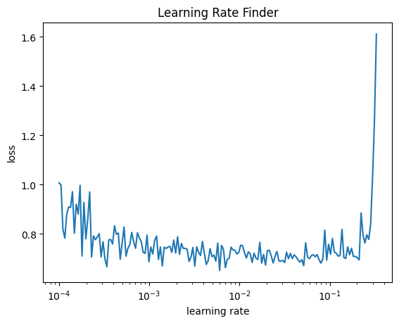
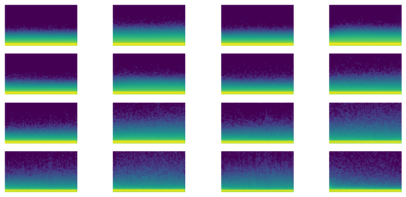
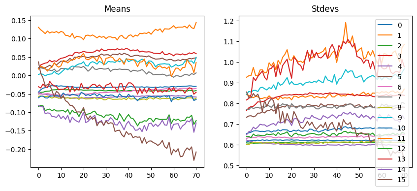
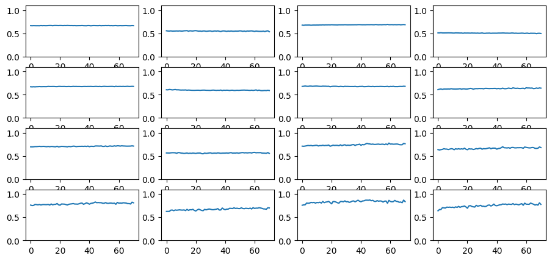

from atai.core import *atai
Atomic AI – An attempt at a minimalist, flexible deep learning framework for diverse models.
Atomic AI is a flexible, minimalist deep neural network training framework based on Jeremy Howard’s miniai from the fast.ai 2022 course.
Install
pip install ataiHow to use
The following example demonstrates how the Atomic AI training framework can be used to train a custom model that predicts protein solubility.
Imports
import torch
import torch.nn.functional as F
import torch.nn as nn
from torch.nn import init
from torch import optim
from torcheval.metrics import BinaryAccuracy, BinaryAUROC
from torcheval.metrics.functional import binary_auroc, binary_accuracy
from torchmetrics.classification import BinaryMatthewsCorrCoef
from torchmetrics.functional.classification import binary_matthews_corrcoef
import fastcore.all as fc
from functools import partialLoad Protein Solubility
This example uses the dataset from the DeepSol paper by Khurana et al. which was obtained at https://zenodo.org/records/1162886. It consists of amino acid sequences of peptides along with solubility labels that are 1 if the peptide is soluble and 0 if the peptide is insoluble.
train_sqs = open('sol_data/train_src', 'r').read().splitlines()
train_tgs = list(map(int, open('sol_data/train_tgt', 'r').read().splitlines()))
valid_sqs = open('sol_data/val_src', 'r').read().splitlines()
valid_tgs = list(map(int, open('sol_data/val_tgt', 'r').read().splitlines()))
train_sqs[:2], train_tgs[:2](['GMILKTNLFGHTYQFKSITDVLAKANEEKSGDRLAGVAAESAEERVAAKVVLSKMTLGDLRNNPVVPYETDEVTRIIQDQVNDRIHDSIKNWTVEELREWILDHKTTDADIKRVARGLTSEIIAAVTKLMSNLDLIYGAKKIRVIAHANTTIGLPGTFSARLQPNHPTDDPDGILASLMEGLTYGIGDAVIGLNPVDDSTDSVVRLLNKFEEFRSKWDVPTQTCVLAHVKTQMEAMRRGAPTGLVFQSIAGSEKGNTAFGFDGATIEEARQLALQSGAATGPNVMYFETGQGSELSSDAHFGVDQVTMEARCYGFAKKFDPFLVNTVVGFIGPEYLYDSKQVIRAGLEDHFMGKLTGISMGCDVCYTNHMKADQNDVENLSVLLTAAGCNFIMGIPHGDDVMLNYQTTGYHETATLRELFGLKPIKEFDQWMEKMGFSENGKLTSRAGDASIFLK',
'MAHHHHHHMSFFRMKRRLNFVVKRGIEELWENSFLDNNVDMKKIEYSKTGDAWPCVLLRKKSFEDLHKLYYICLKEKNKLLGEQYFHLQNSTKMLQHGRLKKVKLTMKRILTVLSRRAIHDQCLRAKDMLKKQEEREFYEIQKFKLNEQLLCLKHKMNILKKYNSFSLEQISLTFSIKKIENKIQQIDIILNPLRKETMYLLIPHFKYQRKYSDLPGFISWKKQNIIALRNNMSKLHRLY'],
[1, 0])len(train_sqs), len(train_tgs), len(valid_sqs), len(valid_tgs)(62478, 62478, 6942, 6942)Data Preparation
Create a sorted list of amino acid sequences aas including an empty string for padding and determine the size of the vocabulary.
aas = sorted(list(set("".join(train_sqs))) + [""])
vocab_size = len(aas)
aas, vocab_size(['',
'A',
'C',
'D',
'E',
'F',
'G',
'H',
'I',
'K',
'L',
'M',
'N',
'P',
'Q',
'R',
'S',
'T',
'V',
'W',
'Y'],
21)Create dictionaries that translate between string and integer representations of amino acids and define the corresponding encode and decode functions.
str2int = {aa:i for i, aa in enumerate(aas)}
int2str = {i:aa for i, aa in enumerate(aas)}
encode = lambda s: [str2int[aa] for aa in s]
decode = lambda l: ''.join([int2str[i] for i in l])
print(encode("AYWCCCGGGHH"))
print(decode(encode("AYWCCCGGGHH")))[1, 20, 19, 2, 2, 2, 6, 6, 6, 7, 7]
AYWCCCGGGHHFigure out what the range of lengths of amino acid sequences in the dataset is.
train_lens = list(map(len, train_sqs))
min(train_lens), max(train_lens)(19, 1691)Create a function that drops all sequences above a chosen threshold and also returns a list of indices of the sequences that meet the threshold that can be used to obtain the correct labels.
def drop_long_sqs(sqs, threshold=1200):
new_sqs = []
idx = []
for i, sq in enumerate(sqs):
if len(sq) <= threshold:
new_sqs.append(sq)
idx.append(i)
return new_sqs, idxDrop all sequences above your chosen threshold.
trnsqs, trnidx = drop_long_sqs(train_sqs, threshold=200)
vldsqs, vldidx = drop_long_sqs(valid_sqs, threshold=200)len(trnidx), len(vldidx)(18066, 1971)max(map(len, trnsqs))200Create a function for zero padding all sequences.
def zero_pad(sq, length=1200):
new_sq = sq.copy()
if len(new_sq) < length:
new_sq.extend([0] * (length-len(new_sq)))
return new_sqNow encode and zero pad all sequences and make sure that it worked out correctly.
trn = list(map(encode, trnsqs))
vld = list(map(encode, vldsqs))
print(f"Length of the first two sequences before zero padding: {len(trn[0])}, {len(trn[1])}")
trn = list(map(partial(zero_pad, length=200), trn))
vld = list(map(partial(zero_pad, length=200), vld))
print(f"Length of the first two sequences after zero padding: {len(trn[0])}, {len(trn[1])}");Length of the first two sequences before zero padding: 116, 135
Length of the first two sequences after zero padding: 200, 200Convert the data to torch.tensors unsing dtype=torch.int64 and check for correctness.
trntns = torch.tensor(trn, dtype=torch.int64)
vldtns = torch.tensor(vld, dtype=torch.int64)
trntns.shape, trntns[0](torch.Size([18066, 200]),
tensor([11, 9, 1, 10, 2, 10, 10, 10, 10, 13, 18, 10, 6, 10, 10, 18, 16, 16, 9, 17, 10, 2, 16, 11, 4, 4, 1, 8, 12, 4, 15, 8, 14,
4, 18, 1, 6, 16, 10, 8, 5, 15, 1, 8, 16, 16, 8, 6, 10, 4, 2, 14, 16, 18, 17, 16, 15, 6, 3, 10, 1, 17, 2, 13, 15, 6,
5, 1, 18, 17, 6, 2, 17, 2, 6, 16, 1, 2, 6, 16, 19, 3, 18, 15, 1, 4, 17, 17, 2, 7, 2, 14, 2, 1, 6, 11, 3, 19, 17,
6, 1, 15, 2, 2, 15, 18, 14, 13, 10, 4, 7, 7, 7, 7, 7, 7, 0, 0, 0, 0, 0, 0, 0, 0, 0, 0, 0, 0, 0, 0, 0, 0,
0, 0, 0, 0, 0, 0, 0, 0, 0, 0, 0, 0, 0, 0, 0, 0, 0, 0, 0, 0, 0, 0, 0, 0, 0, 0, 0, 0, 0, 0, 0, 0, 0,
0, 0, 0, 0, 0, 0, 0, 0, 0, 0, 0, 0, 0, 0, 0, 0, 0, 0, 0, 0, 0, 0, 0, 0, 0, 0, 0, 0, 0, 0, 0, 0, 0,
0, 0]))trntns.shape, vldtns.shape(torch.Size([18066, 200]), torch.Size([1971, 200]))Obtain the correct labels using the lists of indices obtained from the drop_long_sqs function and convert the lists of labels to tensors in torch.float32 format.
trnlbs = torch.tensor(train_tgs, dtype=torch.float32)[trnidx]
vldlbs = torch.tensor(valid_tgs, dtype=torch.float32)[vldidx]
trnlbs.shape, vldlbs.shape(torch.Size([18066]), torch.Size([1971]))Calculate the ratios of soluble peptides in the train and valid data.
trnlbs.sum().item()/trnlbs.shape[0], vldlbs.sum().item()/vldlbs.shape[0](0.4722129967895494, 0.4657534246575342)These ratios tell us that there are slightly less than half soluble proteins in the training an validation data, and slightly more than half in the test set.
Dataset and DataLoaders
Turn train and valid data into datasets using the Dataset class.
trnds = Dataset(trntns, trnlbs)
vldds = Dataset(vldtns, vldlbs)
trnds[0](tensor([11, 9, 1, 10, 2, 10, 10, 10, 10, 13, 18, 10, 6, 10, 10, 18, 16, 16, 9, 17, 10, 2, 16, 11, 4, 4, 1, 8, 12, 4, 15, 8, 14,
4, 18, 1, 6, 16, 10, 8, 5, 15, 1, 8, 16, 16, 8, 6, 10, 4, 2, 14, 16, 18, 17, 16, 15, 6, 3, 10, 1, 17, 2, 13, 15, 6,
5, 1, 18, 17, 6, 2, 17, 2, 6, 16, 1, 2, 6, 16, 19, 3, 18, 15, 1, 4, 17, 17, 2, 7, 2, 14, 2, 1, 6, 11, 3, 19, 17,
6, 1, 15, 2, 2, 15, 18, 14, 13, 10, 4, 7, 7, 7, 7, 7, 7, 0, 0, 0, 0, 0, 0, 0, 0, 0, 0, 0, 0, 0, 0, 0, 0,
0, 0, 0, 0, 0, 0, 0, 0, 0, 0, 0, 0, 0, 0, 0, 0, 0, 0, 0, 0, 0, 0, 0, 0, 0, 0, 0, 0, 0, 0, 0, 0, 0,
0, 0, 0, 0, 0, 0, 0, 0, 0, 0, 0, 0, 0, 0, 0, 0, 0, 0, 0, 0, 0, 0, 0, 0, 0, 0, 0, 0, 0, 0, 0, 0, 0,
0, 0]),
tensor(0.))Use the get_dls function to obtain the dataloaders from the train and valid datasets.
dls = get_dls(trnds, vldds, bs=32)
next(iter(dls.train))[0][:2], next(iter(dls.train))[1][:2](tensor([[11, 1, 7, 7, 7, 7, 7, 7, 11, 11, 13, 15, 16, 4, 12, 14, 9, 4, 4, 4, 4, 19, 4, 10, 7, 13, 10, 5, 10, 16, 9, 8, 13,
12, 9, 9, 3, 8, 3, 9, 12, 13, 1, 10, 16, 1, 10, 8, 17, 10, 8, 12, 4, 4, 4, 4, 9, 4, 18, 5, 16, 20, 4, 13, 15, 15,
9, 12, 10, 9, 9, 9, 8, 17, 4, 9, 6, 14, 8, 8, 20, 9, 9, 3, 15, 15, 12, 10, 20, 4, 13, 20, 14, 14, 12, 9, 12, 3, 9,
8, 12, 20, 5, 4, 9, 9, 12, 5, 6, 6, 12, 1, 3, 8, 16, 9, 4, 4, 4, 18, 10, 3, 18, 4, 11, 3, 4, 4, 6, 17, 17, 18,
17, 17, 1, 4, 14, 6, 6, 3, 7, 16, 16, 14, 12, 18, 16, 12, 12, 14, 4, 1, 17, 3, 14, 17, 16, 8, 6, 4, 18, 10, 18, 2, 10,
16, 11, 11, 12, 10, 9, 14, 0, 0, 0, 0, 0, 0, 0, 0, 0, 0, 0, 0, 0, 0, 0, 0, 0, 0, 0, 0, 0, 0, 0, 0, 0, 0,
0, 0],
[11, 10, 1, 11, 18, 12, 9, 18, 10, 3, 19, 8, 15, 16, 10, 5, 19, 9, 4, 4, 11, 4, 10, 17, 10, 18, 6, 10, 14, 12, 16, 6, 9,
17, 17, 5, 18, 12, 18, 8, 1, 16, 6, 14, 5, 17, 4, 3, 11, 8, 13, 17, 18, 6, 5, 12, 11, 15, 9, 8, 17, 9, 6, 12, 18, 17,
8, 9, 10, 19, 3, 8, 6, 6, 14, 13, 15, 5, 15, 16, 11, 19, 4, 15, 20, 2, 15, 6, 18, 12, 1, 8, 18, 5, 11, 18, 3, 1, 1,
3, 4, 4, 9, 10, 4, 1, 16, 15, 12, 4, 10, 11, 14, 10, 10, 3, 9, 13, 14, 10, 3, 1, 8, 13, 18, 10, 18, 10, 6, 12, 9, 9,
3, 10, 13, 6, 1, 10, 3, 4, 15, 14, 10, 8, 4, 15, 11, 12, 10, 16, 16, 8, 14, 12, 15, 4, 8, 2, 2, 20, 16, 8, 16, 2, 9,
4, 9, 4, 12, 8, 3, 8, 17, 10, 14, 19, 10, 8, 3, 7, 16, 9, 1, 14, 15, 0, 0, 0, 0, 0, 0, 0, 0, 0, 0, 0, 0, 0,
0, 0]]),
tensor([1., 0.]))Design Your Model
Let’s create a tiny model (~10k parameters) that uses a sequence of 1-dimensional convolutional layers with skip connections, kaiming he initialization, leaky relus, batchnorm, and dropout.
First, obtain a single batch from dls to help design the model.
idx = next(iter(dls.train))[0] ## a single batch
idx, idx.shape(tensor([[11, 9, 17, ..., 0, 0, 0],
[16, 12, 1, ..., 0, 0, 0],
[16, 1, 14, ..., 0, 0, 0],
...,
[11, 1, 7, ..., 0, 0, 0],
[11, 3, 13, ..., 0, 0, 0],
[16, 17, 12, ..., 0, 0, 0]]),
torch.Size([32, 200]))Custom Modules
def conv1d(ni, nf, ks=3, stride=2, act=nn.ReLU, norm=None, bias=None):
if bias is None: bias = not isinstance(norm, (nn.BatchNorm1d,nn.BatchNorm2d,nn.BatchNorm3d))
layers = [nn.Conv1d(ni, nf, stride=stride, kernel_size=ks, padding=ks//2, bias=bias)]
if norm: layers.append(norm(nf))
if act: layers.append(act())
return nn.Sequential(*layers)
def _conv1d_block(ni, nf, stride, act=nn.ReLU, norm=None, ks=3):
return nn.Sequential(conv1d(ni, nf, stride=1, act=act, norm=norm, ks=ks),
conv1d(nf, nf, stride=stride, act=None, norm=norm, ks=ks))
class ResBlock1d(nn.Module):
def __init__(self, ni, nf, stride=1, ks=3, act=nn.ReLU, norm=None):
super().__init__()
self.convs = _conv1d_block(ni, nf, stride=stride, ks=ks, act=act, norm=norm)
self.idconv = fc.noop if ni==nf else conv1d(ni, nf, stride=1, ks=1, act=None)
self.pool = fc.noop if stride==1 else nn.AvgPool1d(stride, ceil_mode=True)
self.act = act()
def forward(self, x): return self.act(self.convs(x) + self.pool(self.idconv(x)))The following module switches the rank order from BLC to BCL.
class Reshape(nn.Module):
def forward(self, x):
B, L, C = x.shape
return x.view(B, C, L)Model Architecture
lr = 1e-2
epochs = 30
n_embd = 16
dls = get_dls(trnds, vldds, bs=32)
act_genrelu = partial(GeneralRelu, leak=0.1, sub=0.4)
model = nn.Sequential(nn.Embedding(vocab_size, n_embd, padding_idx=0), Reshape(),
ResBlock1d(n_embd, 2, ks=15, stride=2, norm=nn.BatchNorm1d, act=act_genrelu), nn.Dropout(0.1),
ResBlock1d(2, 4, ks=13, stride=2, norm=nn.BatchNorm1d, act=act_genrelu), nn.Dropout(0.1),
ResBlock1d(4, 4, ks=11, stride=2, norm=nn.BatchNorm1d, act=act_genrelu), nn.Dropout(0.1),
ResBlock1d(4, 4, ks=9, stride=2, norm=nn.BatchNorm1d, act=act_genrelu), nn.Dropout(0.1),
ResBlock1d(4, 8, ks=7, stride=2, norm=nn.BatchNorm1d, act=act_genrelu), nn.Dropout(0.1),
ResBlock1d(8, 8, ks=5, stride=2, norm=nn.BatchNorm1d, act=act_genrelu), nn.Dropout(0.1),
ResBlock1d(8, 16, ks=3, stride=2, norm=nn.BatchNorm1d, act=act_genrelu), nn.Dropout(0.1),
ResBlock1d(16, 32, ks=3, stride=2, norm=nn.BatchNorm1d, act=act_genrelu), nn.Dropout(0.1),
nn.Flatten(1, -1),
nn.Linear(32, 1),
nn.Flatten(0, -1),
nn.Sigmoid())
model(idx).shapetorch.Size([32])iw = partial(init_weights, leaky=0.1)
model = model.apply(iw)
metrics = MetricsCB(BinaryAccuracy(), BinaryMatthewsCorrCoef(), BinaryAUROC())
astats = ActivationStats(fc.risinstance(GeneralRelu))
cbs = [DeviceCB(), ProgressCB(plot=False), metrics, astats]
learn = TrainLearner(model, dls, F.binary_cross_entropy, lr=lr, cbs=cbs, opt_func=torch.optim.AdamW)
print(f"Parameters total: {sum(p.nelement() for p in model.parameters())}")
learn.lr_find(start_lr=1e-4, gamma=1.05, av_over=3, max_mult=5)Parameters total: 10175
0.00% [0/10 00:00<?]
88.85% [502/565 00:32<00:04 0.919]

This is a pretty noisy training set, so the learning rate finder does not work very well. Yet it is possible to get a somewhat informative result using the av_over keyword argument that tells lr_find to average over the specified number of batches for each learning rate tested. It also helps to dial the gamma value down from its default value of 1.3.
Training
learn.fit(epochs)| BinaryAccuracy | BinaryMatthewsCorrCoef | BinaryAUROC | loss | epoch | train |
|---|---|---|---|---|---|
| 0.510 | 0.008 | 0.507 | 0.722 | 0 | train |
| 0.527 | -0.033 | 0.494 | 0.691 | 0 | eval |
| 0.515 | 0.004 | 0.506 | 0.695 | 1 | train |
| 0.534 | 0.003 | 0.520 | 0.691 | 1 | eval |
| 0.537 | 0.054 | 0.526 | 0.692 | 2 | train |
| 0.530 | 0.058 | 0.550 | 0.693 | 2 | eval |
| 0.553 | 0.090 | 0.551 | 0.688 | 3 | train |
| 0.562 | 0.108 | 0.575 | 0.684 | 3 | eval |
| 0.589 | 0.170 | 0.607 | 0.671 | 4 | train |
| 0.619 | 0.234 | 0.663 | 0.647 | 4 | eval |
| 0.622 | 0.247 | 0.630 | 0.653 | 5 | train |
| 0.643 | 0.302 | 0.676 | 0.637 | 5 | eval |
| 0.627 | 0.260 | 0.642 | 0.650 | 6 | train |
| 0.649 | 0.313 | 0.675 | 0.628 | 6 | eval |
| 0.633 | 0.272 | 0.647 | 0.644 | 7 | train |
| 0.650 | 0.309 | 0.648 | 0.637 | 7 | eval |
| 0.634 | 0.276 | 0.652 | 0.640 | 8 | train |
| 0.650 | 0.314 | 0.683 | 0.620 | 8 | eval |
| 0.637 | 0.284 | 0.646 | 0.641 | 9 | train |
| 0.651 | 0.320 | 0.685 | 0.617 | 9 | eval |
| 0.639 | 0.287 | 0.661 | 0.636 | 10 | train |
| 0.645 | 0.308 | 0.671 | 0.647 | 10 | eval |
| 0.638 | 0.281 | 0.663 | 0.636 | 11 | train |
| 0.646 | 0.298 | 0.690 | 0.620 | 11 | eval |
| 0.641 | 0.286 | 0.670 | 0.632 | 12 | train |
| 0.648 | 0.296 | 0.685 | 0.619 | 12 | eval |
| 0.641 | 0.290 | 0.668 | 0.632 | 13 | train |
| 0.662 | 0.323 | 0.691 | 0.618 | 13 | eval |
| 0.643 | 0.290 | 0.675 | 0.630 | 14 | train |
| 0.641 | 0.286 | 0.677 | 0.627 | 14 | eval |
| 0.643 | 0.289 | 0.676 | 0.630 | 15 | train |
| 0.659 | 0.311 | 0.699 | 0.616 | 15 | eval |
| 0.644 | 0.291 | 0.677 | 0.629 | 16 | train |
| 0.652 | 0.314 | 0.690 | 0.613 | 16 | eval |
| 0.646 | 0.296 | 0.675 | 0.626 | 17 | train |
| 0.645 | 0.282 | 0.694 | 0.622 | 17 | eval |
| 0.642 | 0.288 | 0.678 | 0.626 | 18 | train |
| 0.648 | 0.332 | 0.677 | 0.639 | 18 | eval |
| 0.645 | 0.292 | 0.685 | 0.625 | 19 | train |
| 0.634 | 0.260 | 0.698 | 0.615 | 19 | eval |
| 0.649 | 0.302 | 0.689 | 0.621 | 20 | train |
| 0.651 | 0.344 | 0.710 | 0.617 | 20 | eval |
| 0.648 | 0.299 | 0.685 | 0.624 | 21 | train |
| 0.660 | 0.315 | 0.700 | 0.614 | 21 | eval |
| 0.648 | 0.297 | 0.691 | 0.620 | 22 | train |
| 0.563 | 0.168 | 0.679 | 0.672 | 22 | eval |
| 0.651 | 0.303 | 0.690 | 0.620 | 23 | train |
| 0.654 | 0.330 | 0.710 | 0.611 | 23 | eval |
| 0.650 | 0.304 | 0.691 | 0.620 | 24 | train |
| 0.668 | 0.344 | 0.711 | 0.599 | 24 | eval |
| 0.654 | 0.311 | 0.692 | 0.617 | 25 | train |
| 0.649 | 0.294 | 0.698 | 0.620 | 25 | eval |
| 0.650 | 0.301 | 0.690 | 0.617 | 26 | train |
| 0.642 | 0.320 | 0.697 | 0.611 | 26 | eval |
| 0.650 | 0.303 | 0.688 | 0.620 | 27 | train |
| 0.663 | 0.334 | 0.708 | 0.625 | 27 | eval |
| 0.652 | 0.308 | 0.694 | 0.616 | 28 | train |
| 0.672 | 0.356 | 0.711 | 0.597 | 28 | eval |
| 0.651 | 0.304 | 0.695 | 0.617 | 29 | train |
| 0.659 | 0.322 | 0.702 | 0.603 | 29 | eval |
Inspect Activations
dls = get_dls(trnds, vldds, bs=256)
model = nn.Sequential(nn.Embedding(vocab_size, n_embd, padding_idx=0), Reshape(),
ResBlock1d(n_embd, 2, ks=15, stride=2, norm=nn.BatchNorm1d, act=act_genrelu), nn.Dropout(0.1),
ResBlock1d(2, 4, ks=13, stride=2, norm=nn.BatchNorm1d, act=act_genrelu), nn.Dropout(0.1),
ResBlock1d(4, 4, ks=11, stride=2, norm=nn.BatchNorm1d, act=act_genrelu), nn.Dropout(0.1),
ResBlock1d(4, 4, ks=9, stride=2, norm=nn.BatchNorm1d, act=act_genrelu), nn.Dropout(0.1),
ResBlock1d(4, 8, ks=7, stride=2, norm=nn.BatchNorm1d, act=act_genrelu), nn.Dropout(0.1),
ResBlock1d(8, 8, ks=5, stride=2, norm=nn.BatchNorm1d, act=act_genrelu), nn.Dropout(0.1),
ResBlock1d(8, 16, ks=3, stride=2, norm=nn.BatchNorm1d, act=act_genrelu), nn.Dropout(0.1),
ResBlock1d(16, 32, ks=3, stride=2, norm=nn.BatchNorm1d, act=act_genrelu), nn.Dropout(0.1),
nn.Flatten(1, -1),
nn.Linear(32, 1),
nn.Flatten(0, -1),
nn.Sigmoid())
model = model.apply(iw)
astats = ActivationStats(fc.risinstance(GeneralRelu))
cbs = [DeviceCB(), astats]
learn = TrainLearner(model, dls, F.binary_cross_entropy, lr=lr, cbs=cbs, opt_func=torch.optim.AdamW)
print(f"Parameters total: {sum(p.nelement() for p in model.parameters())}")
learn.fit(1)Parameters total: 10175astats.color_dim()
astats.plot_stats()
astats.dead_chart()